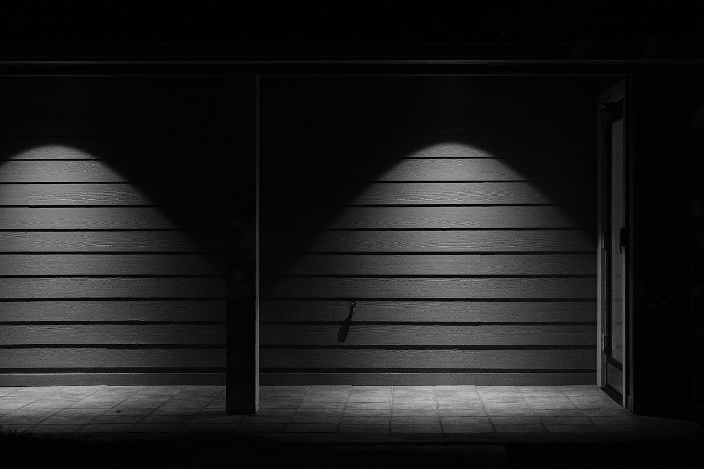
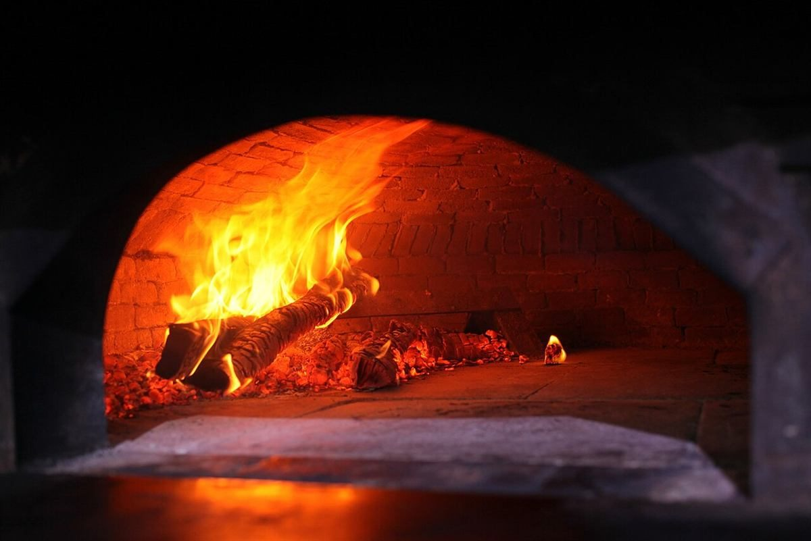

戸 ― とびら
入口のほう。所在地と、ご案内。

斤 ― パンの数え方
パンのほう。写真はイメージです。
制作側の連想
「所」の字は、戸と斤。
戸とびら
+斤パンを数える単位
=所ところ
屋号の「製パン所」の「所」を分解すると、「戸」と「斤」でした。「斤」はパンを数える単位としても使われます。このサイトはそこから連想して、ページを「戸のほう(入口)」と「斤のほう(パン)」に分けて作っています。制作側の連想で、お店の理念・由来とは無関係です。
戸戸のほう
入口に立つ前に、確認できていること。
| 所在地 | 〒742-1103 山口県熊毛郡平生町竪ヶ浜198-4 |
|---|---|
| 電話 | なし |
| 営業時間 | 準備中 |
| 定休日 | 準備中 |
| ご予約 | 準備中 |
| 駐車場 | 準備中 |
| SNS | Instagram @kubo.pan |

斤斤のほう
パンの写真(イメージ)。
国外・撮影地不明のフリー素材です。お店のパンや提供内容を示すものではありません。


麦と窯
パンの前にあるもの(イメージ)。

